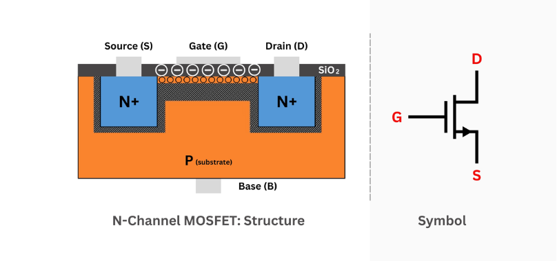
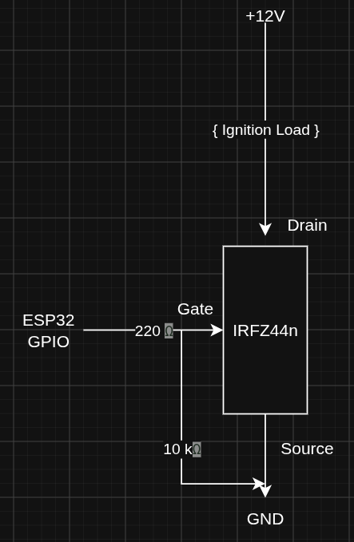
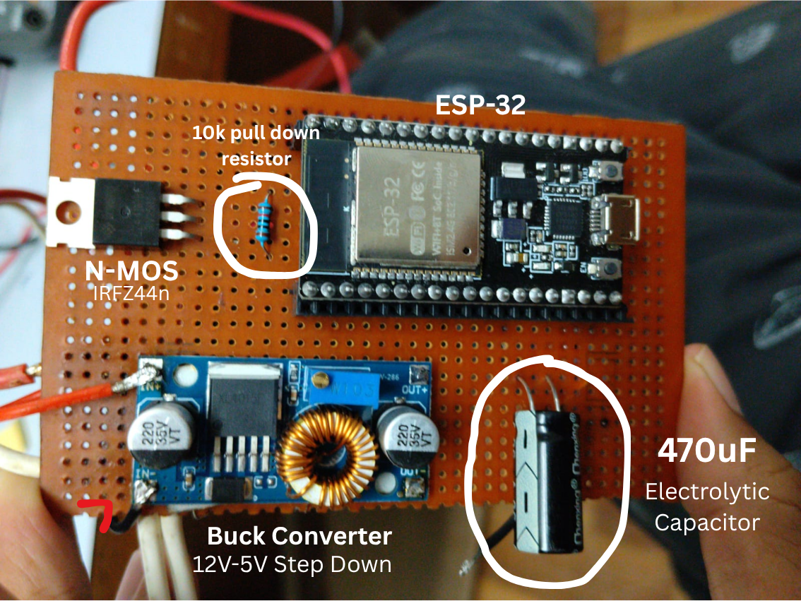
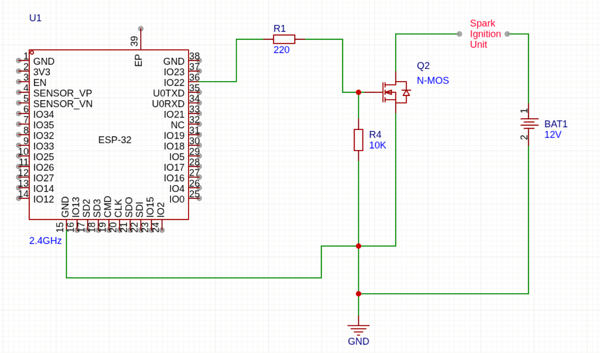
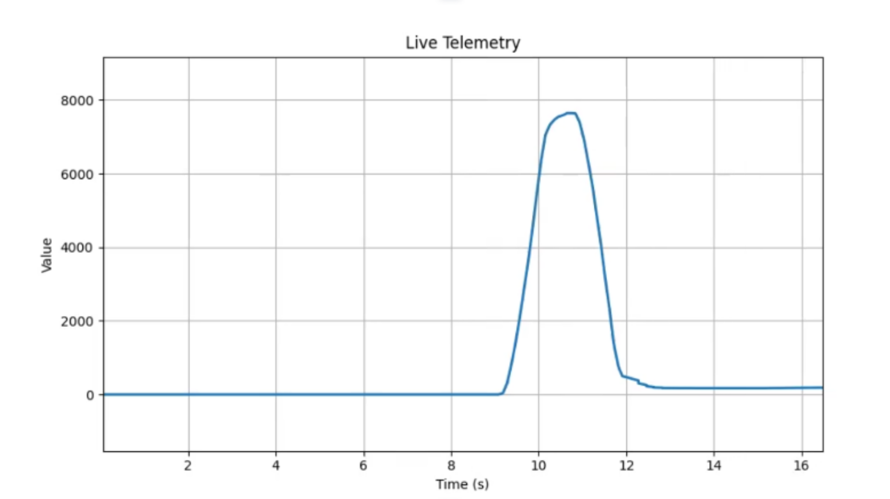
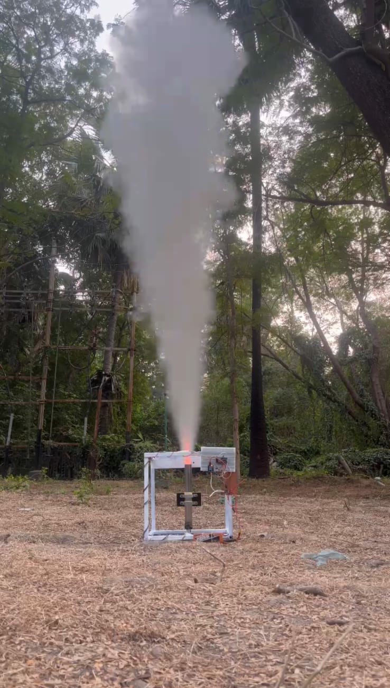
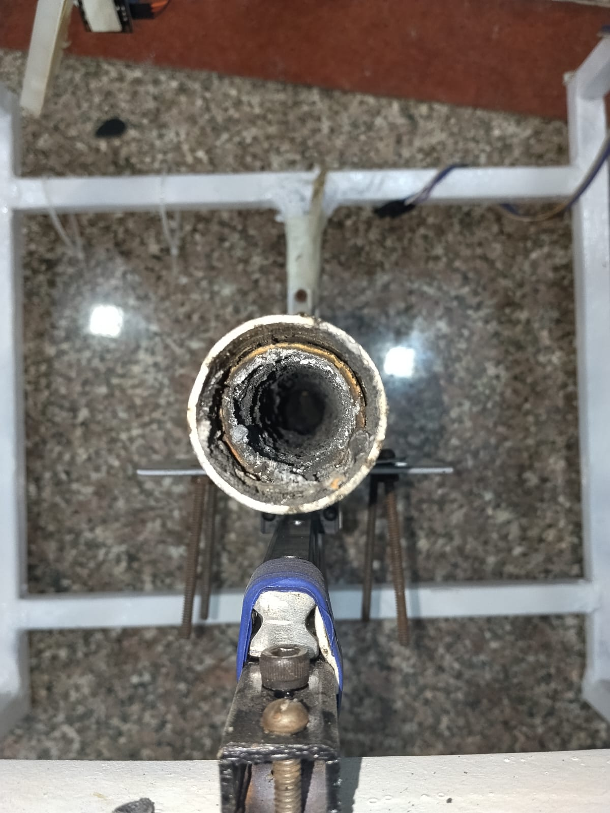

Model Rocketry: Implementing Thrust-Vector Control
Overview
This project is an ongoing exploration of amateur rocketry, with the goal of learning how to design, build, test, and eventually control a small experimental rocket. Rather than treating the rocket as a single finished product, the project is being developed as a collection of interconnected engineering problems: propulsion, structures, electronics, sensing, embedded systems, telemetry, and flight control.

The work documented here covers the development process so far, from building and testing rocket motors to assembling and launching an experimental vehicle. Particular attention is given to the parts of the system that still need to be understood and improved, rather than only documenting the experiments that worked.
A major direction of the project is eventually to introduce active thrust-vector control and use the rocket as a practical platform for learning feedback control, embedded electronics, and flight dynamics. That system is still under development, however, and the current stage of the project is focused on establishing a reliable foundation through propulsion testing, hardware development, and flight experimentation.
This documentation therefore follows the project as it develops: what was built, why particular approaches were chosen, how the systems were tested, what went wrong, and what those results changed about the next iteration. The objective is not to present a finished rocket, but to document the engineering process of gradually figuring out how to build one. All this was done under the guidance of Dr. V. Chintala, Associate Professor, Associate Dean [R&D] GSV.
Purpose and Motivation
I started this project back in August 2025, with the hopes of getting more clarity and hands-on exposure to electronics engineering. The courses taught in class weren't really hands-on and I couldn't shake the feeling of wanting to build something. So I deliberately chose a project that was out of my league, and hard to execute, something that involved interdisciplinary knowledge to perform -- so that I could learn all of engineering at once. Atleast that was the initial motivation, the other reason was -- rockets are hot boy shit! ... and I wanted to impress my college crush (jk!). [i still havent asked her out...!]
What started as an attempt to get more hands-on exposure to electronics gradually became much larger than that. The project has since turned into an excuse to learn whatever the next problem demands, whether that means understanding propulsion, designing hardware, writing software, studying control systems, or simply figuring out why something I built refuses to work.
Experimental Progress
The current work is still in an experimental development phase. The main completed activities are ground-based motor testing and one initial launch, both of which are being used to expose practical problems before more advanced control-system work is presented as a finished result.
Casting the Propellant
Initially we thought of purchasing commercially available motors. But they soon turned out to be very expensive, the most obvious reason was the fact that they were'nt locally manufactured in India. Brands like Estes are manufactured in Colorado, US. The shipping cost alone would cost more than the motors themselves.
So we decided to manufacture our own sugar motors. Since military grade propellants like APCP and HTPB arent readily available to small student groups, we went with the classic KNSu derivative propellants. Several static-fire tests have been conducted to begin characterizing the propulsion system. These tests are being used to investigate ignition behaviour, motor operation, thrust production, burn characteristics, repeatability, and consistency between manufactured motors.

I ordered a bunch of KNO3 bottles from an online store and some sugar from the local supermarket. The first few batches burned surprisingly well, but we quickly ran into a rather annoying problem: regular granulated sugar is made up of relatively large crystals, while KNO3 is a separate crystalline solid. Simply mixing the two does not guarantee that the oxidizer and fuel are distributed uniformly throughout the mixture.
This is where water became useful. We used it as a temporary solvent so that the sugar and KNO3 could be dissolved and mixed much more uniformly. The important part, however, was that the water was only there to help with processing. It was not supposed to remain in the final material. Any significant amount of water left behind would act as an unwanted thermal load during ignition and could interfere with the consistency of combustion.
So the process became a rather simple cycle: dissolve and mix the constituents, and then remove the water again before the material was used for testing. In other words, the water helped us make a more homogeneous mixture, but was not part of the propellant itself.
The next problem was the sugar itself. Ordinary table sugar, or sucrose, is convenient because it is cheap and easy to obtain, but its relatively high melting behaviour and crystalline structure make it less convenient to process consistently. We therefore began looking at alternative fuels with properties more suitable for the process we were trying to develop.
This led us to sorbitol. Unlike ordinary table sugar, sorbitol has different thermal and physical properties that make it more convenient to process as a fuel. The motivation was not simply to find something that "burns better", but to obtain a material whose preparation and combustion behaviour could be characterized more consistently between tests.
At a high level, the combustion can be thought of as an oxidation reaction: the nitrate provides the oxidizing environment while the organic fuel provides the material being oxidized. Once ignition occurs, the reaction releases a large amount of heat and produces a mixture of hot gaseous products together with condensed solid products.
One of the things we noticed during testing was that the combustion does not produce only gas. Some of the products remain condensed as solid residue, including potassium-containing compounds often referred to collectively as "potash" in this context. The amount and composition of this residue depend on the fuel, oxidizer balance, temperature, and combustion conditions.
This became another reason for investigating sorbitol. Its different decomposition and combustion behaviour can change the balance between gaseous and condensed products compared with sucrose. For us, this mattered because residue is not just a cosmetic issue: condensed products represent material that does not contribute to the expanding gas flow, and excessive deposition can also complicate the interpretation and repeatability of motor tests.
At this point, the purpose of the experiments was therefore becoming clearer. We were no longer simply trying to make something that burns. We were trying to understand how the choice of fuel, the homogeneity of the mixture, the processing method, and the resulting combustion products affected the repeatability of the motor.
Casting Challanges

Cooking the propellant was the easy part -- the bigger problem was casting it into a motor casing before it cooled down. With sugar propellant, we had a very small working window: it cooled rapidly and began to harden within roughly 5--10 minutes. After around 15 minutes, the material became extremely hard, making it considerably more difficult to cast properly.
This was another area where sorbitol proved to be much easier to work with. Once heated, it remained workable for a considerably longer period before beginning to solidify, giving us more time to transfer the material into the casing and form the internal geometry properly. That extra working time made the casting process considerably less rushed and, more importantly, made it easier to produce repeatable motors.
We also wanted to keep the experimental setup as inexpensive as possible. Rather than buying purpose-built tubing for every iteration, we found a suitable piece of PVC tubing in a local scrapyard and repurposed it as the motor casing for our early ground tests. It was a small decision, but these are exactly the kinds of compromises that made the project financially practical while we were still in the experimental phase.

The most critical part of the casting process, however, was not the casing itself -- it was the core. The core determines the internal geometry of the propellant grain and therefore has a direct influence on how much surface area is exposed during combustion. That geometry affects how the motor burns throughout its operating period, so getting the core wrong could make an otherwise good propellant batch behave very differently from the previous test.
The core was made by inserting a metal rod in the propellant mixture while it was soft and yeilding, and removing it once it had dried. The challenge here was getting the rod out of the mix without forming an adhesive layer with the propellant mixture. This meant that casting was not simply a matter of filling a tube and waiting for it to cool. We had to pay attention to the internal geometry as well, because consistency in the grain geometry was just as important as consistency in the propellant itself. At this point, we were beginning to realise that making a motor was less about producing one successful burn and more about being able to reproduce the same physical conditions from one test to the next.
Solid-Motor Thrust-test Rig

We decided to build a custom motor testing rig. Went out to the local metal manufacturing workshops in town and got ourselves a huge 20ft GI bar. We custom cut the bar and my good friend Aman welded the parts into a beautiful cube.
I had more fun doing the mechanical part with my friend rather than the part I was supposed to --- Electronics. So I finally decided to give it a shot. A simple ESP32 -- WiFi -- GUI setup to remotely ignite the motor from a safe distance.
The static-fire results obtained so far have not yet demonstrated the level of consistency and repeatability required for reliable characterization. Because of that, the motor manufacturing process, test setup, and measurement approach are still being improved before the results are treated as a stable propulsion baseline.
Ground Control Station and Test Rig
Before attempting to extract meaningful data from a rocket motor, there is a much more basic problem to solve: how do we operate the motor safely in the first place?
A static-fire test allows the motor to be restrained on the ground while its behaviour is observed without actually launching the vehicle. This makes it an extremely useful stage of development, but it also introduces an important requirement: the ignition system needs to be reliable and, more importantly, it needs to be operated from a safe distance.
A traditional manual ignition arrangement places the operator relatively close to the test hardware and makes the exact moment of ignition dependent on a human action. The first electronics system developed for the project therefore focused on something relatively simple but fundamental: a remotely controlled ignition system for static motor testing.
System Architecture
The ignition system was built around an ESP32 microcontroller. The ESP32 provides the wireless interface between the operator's laptop and the electronics at the test stand. An ignition command is sent over Wi-Fi to the ESP32, which then generates the control signal required to activate the ignition circuit.
The ESP32 does not directly carry the current required by the ignition load. Instead, an IRLZ44N logic-level N-channel MOSFET is used as the interface between the low-power digital electronics and the higher-current 12 V ignition circuit.

The resulting architecture can be thought of as a simple chain:
Laptop → Wi-Fi → ESP32 → MOSFET → Ignition LoadThis separation is important. The ESP32 is responsible for the control decision, while the MOSFET is responsible for actually switching the ignition current. In other words, the microcontroller acts as the control layer rather than being asked to handle the power required by the igniter.
ESP32 Control Unit
The ESP32 was selected primarily because it provides built-in Wi-Fi connectivity without requiring a separate wireless communication module. This allowed the ground station to communicate directly with the controller while keeping the electronics at the test stand relatively compact.
At the control level, the ESP32 receives the ignition command and translates it into a GPIO output. The intended controller architecture also provides room for additional functions such as arming logic, ignition timing, telemetry and OTA firmware updates.
This is useful because the ignition circuit was not being treated as an isolated, one-off circuit. It was designed as the beginning of a larger embedded test platform. Once communication between the ground station and the controller exists, information can eventually travel in the opposite direction as well — for example, sensor measurements and system status.
MOSFET Switching Stage


The actual ignition path is powered from a 12 V supply, with the IRLZ44N configured as a low-side switch. The ignition load is connected between the positive supply and the MOSFET drain, while the MOSFET source is connected to ground.
When the ESP32 GPIO is driven HIGH, approximately 3.3 V is applied to the MOSFET gate. Since the source is connected to ground, this produces a positive gate-to-source voltage, causing the MOSFET to enter its conducting state.
The 12 V current can then flow through the ignition load, into the drain of the MOSFET, through the MOSFET channel and finally to ground. The electrical path is therefore completed and the ignition load is activated.
When the GPIO returns LOW, the conductive channel disappears and the drain-to-source path opens again. The ignition current therefore stops.
Gate Control and Default-Off Behaviour
There are two small components around the MOSFET gate that are easy to overlook but are important to the behaviour of the switching stage: a 220 Ω series resistor and a 10 kΩ pull-down resistor.
The 220 Ω resistor is placed between the ESP32 GPIO and the MOSFET gate. A MOSFET gate behaves electrically like a capacitive load, meaning that changing its voltage involves charging and discharging that capacitance. The series resistor limits the instantaneous current associated with those transitions and provides some isolation between the ESP32 GPIO and the MOSFET gate.
The 10 kΩ resistor is connected from the gate to ground. Its purpose is to establish a defined default state for the MOSFET. During ESP32 startup, reset or any situation where the GPIO is not actively driving the gate, the pull-down ensures that the gate is held LOW rather than being left floating.
For an ignition system, this is particularly important. An undefined GPIO state is not merely a software inconvenience when that GPIO controls an ignition circuit. The desired behaviour is therefore deliberately simple:
No valid control signal → MOSFET OFF → Ignition path open.
Power Regulation
The control electronics require a lower regulated voltage than the 12 V supply used by the ignition path. A buck converter is therefore used to step the available supply voltage down to the level required by the ESP32 and associated electronics.
Separating these electrical domains is an important part of the design. The 12 V supply is associated primarily with the ignition side of the system, while the ESP32 operates from a regulated lower-voltage rail. The buck converter provides this regulated supply rather than attempting to connect the microcontroller directly to the 12 V source.

This becomes especially relevant in a system where the ignition load can produce comparatively large changes in current. Keeping the controller supplied through a dedicated regulated rail helps prevent disturbances on the power side from directly becoming disturbances on the logic side.
Supply Decoupling and Capacitors
One of the less glamorous parts of the circuit is also one of the things that becomes surprisingly important once the circuit is actually built: decoupling.
The design includes a 470 µF electrolytic capacitor as a bulk capacitor on the supply rail. Its purpose is to provide a local reservoir of stored charge for relatively larger or slower changes in current demand.
The reason for using an electrolytic capacitor here is its comparatively large capacitance. A 470 µF capacitor can store considerably more charge than the small ceramic capacitors normally used for high-frequency decoupling. It can therefore help support transient current demand and reduce the magnitude of sudden voltage disturbances on the supply rail.
A smaller ceramic capacitor serves a different purpose. It might initially seem redundant to place two capacitors on the same supply rail, but the two components are useful because capacitors do not behave ideally across all frequencies.
The large electrolytic capacitor is good at providing bulk energy storage, but its larger physical construction and parasitic properties make it less effective at suppressing very fast, high-frequency disturbances. A small ceramic capacitor, on the other hand, has much lower parasitic inductance and is much better suited to dealing with these rapid transients.
In practical terms, the two capacitors complement each other:
- 470 µF electrolytic: bulk energy storage and lower-frequency supply stabilization.
- Ceramic capacitor: high-frequency decoupling close to the electronics.
The ceramic capacitor should be placed physically close to the power pins of the device or supply rail being decoupled, keeping the electrical loop between the capacitor, supply and ground as short as practical. The larger electrolytic capacitor can be positioned nearby on the same supply rail where it can provide the required bulk capacitance.
The exact value of the ceramic capacitor is not specified in the current project documentation, so it is intentionally not stated here rather than assigning a value that was not actually part of the documented design.

Static Fire Testing

Once the ignition and test hardware had been assembled, the next step was to move from simply proving that the electronics worked to actually testing the propulsion system. A couple of static-fire tests were conducted with the motor restrained on the test rig, allowing the ignition sequence and thrust response to be observed without attempting a flight.
The tests produced a nominal thrust of approximately 35 - 65 N. It is important to put this number into context, however: these tests were conducted without a nozzle. The measured value should therefore not be interpreted as the expected thrust of the completed rocket motor. The results were inconsistent due to the unreliable ADC we had at our disposal, but we went with the results anyway.

The nozzle is responsible for converting the pressure and thermal energy generated inside the combustion chamber into a high-velocity exhaust flow. Without it, the combustion gases are released directly from the motor rather than being accelerated and expanded through a properly designed nozzle. Consequently, a substantial part of the potential thrust that would be generated by a complete motor configuration is not present in this measurement.
For this reason, the initial tests were treated primarily as a validation of the motor, ignition system and test infrastructure, rather than as a final performance measurement. Getting a predictable ignition and a measurable thrust response was the first milestone. Once the basic system could be fired reliably, the same test setup could be used to evaluate changes to the motor and, eventually, the addition of a properly designed nozzle.
The static-fire setup also provided a useful opportunity to validate the electronics developed for remote operation. The ignition sequence was initiated from the ground control station, with the ESP32 receiving the command wirelessly and controlling the ignition switching stage through the MOSFET. This allowed the operator to remain physically separated from the motor while still maintaining control over the test.
The thrust trace is particularly useful because the test is no longer just a binary question of whether the motor ignited. The recorded response allows us to look at how the motor behaves over the duration of the burn and gives us a basis for comparing subsequent motor configurations.
The ground control station was deliberately kept separate from the test hardware. The laptop provides the operator interface, while the ESP32 handles the embedded control logic at the test stand. This separation keeps the communication and control layer independent from the high-current ignition path and also gives us a foundation for adding telemetry and additional instrumentation later.

The physical test rig also gave us a first look at how the mechanical system behaved under thrust. Watching the structure move under load was useful in its own right: it exposed mechanical behaviour that is difficult to predict completely from a CAD model alone. The post-test inspection was therefore just as important as the firing itself, allowing the hardware to be checked for damage, deformation, loose components and other signs of unexpected behaviour.
These initial firings were therefore less about chasing a particular thrust number and more about establishing a working experimental platform. With approximately 35 N observed from the nozzle-less configuration, the next logical step was to improve the motor configuration and repeat the measurement under controlled conditions. Each subsequent test can then be treated as an incremental engineering experiment rather than starting from scratch.
First Rocket Launch
One rocket launch has been conducted. This launch represents the project's first transition from ground-based propulsion testing to an actual flight experiment.
The launch is currently documented only at a high level because the detailed flight report, configuration information, photographs, and measurements still need to be added. No flight performance numbers are being stated here until the underlying information is reviewed and documented properly.
- Launch date, location, and rocket configuration: to be added.
- Motor used, flight duration, maximum altitude, and observations: to be added.
- Recovery outcome, photographs or video, telemetry if available, and lessons learned: to be added.
Ongoing Work
The project is currently moving from initial propulsion and flight experimentation toward a more disciplined control-system development process. This section is intentionally incomplete and will be expanded as the work becomes better defined and validated.
- Improve motor manufacturing consistency.
- Conduct additional static-fire tests.
- Establish repeatable propulsion characteristics before relying on the motor model.
- Develop the TVC control-system architecture and mathematical model.
- Define actuator, sensor, electronics, simulation, and controller-development requirements.
- Validate each subsystem experimentally before documenting it as a completed result.
Future Work
Future development will be documented here once the current experimental work produces enough evidence to support a clearer roadmap. The items below are directions for future work, not claims of completed implementation.
- Propulsion refinement and repeatable motor characterization.
- TVC mechanism development and control-system modelling.
- Flight computer, electronics, and sensor integration.
- Closed-loop control development and simulation/validation work.
- Additional flight testing and eventual controlled, recoverable flights.